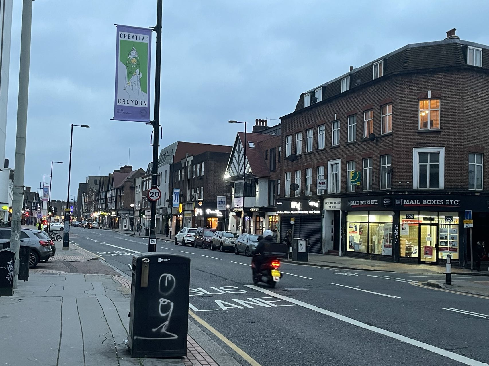

Wed 28 Dec 2022 09:53:03 GMT
It’s our last day in London and it’s raining outside.
Although I haven’t stayed in London for a long time, but in this foreign land, I can feel the sincerity and kindness in this land. Not all blacks are ruffians, and not all whites are alcoholics. This is also the case of Orientals. Prejudice against Europeans. During the two months in London, I felt more politeness and respect, which may not be comparable in China.
I am very fortunate that when I am about to turn thirty, I can come to a foreign country. A joke I saw: The universe is so big, but you can’t get out of this mere 9.6 million square kilometers. So when we have a chance, let’s come out together and experience the exotic customs.
Tue 27 Dec 2022 17:23:22 GMT
Good morning! Yuvia!
I will definitely call you tomorrow, I am going to sleep now.
Today is a beautiful day in London, sunny, blue sky with some white clouds. We went to the Greenwich Observatory.
We wandered around the British Naval University for a while.


There is also the starting point of the world time - Greenwich Observatory.

I’m tired, and I have a lot to share with you, so I’ll save it for a phone chat with you tomorrow.
Good night!
Mon 26 Dec 2022 21:59:11 GMT
Back to the start of the way
It doesn’t seem so unusual
Back to the start of the way
To our childhood rooms
Moon is so close to the top of the wave
Close to the roof of the lighthouse
Moon is a spectator of our weird scenes
Of our weird love
This is a line of lyrics I saw on the subway today, from my favorite Russian band - Motorama, I share it with you.
Sorry, I broke the contract again. I was woken up by my colleagues in China last night to troubleshoot the problem, so I went to sleep very late. Today’s trip was also very sudden. At 11:00 AM, our boss announced a news of going out, so I didn’t have time to tell you. do you remember? The last time I called you near Buckingham Palace, I used up all my data, so I dare not use the data network because I am afraid that if I accidentally run out of balance, I will not be able to contact my colleagues.
We did a full circle around downtown today and I took a picture of the sunset in White City
There is also a group photo with colleagues on OxFord Street
Saw a very tall Christmas tree in the small town of Streatham
Finally, I want to say: Merry Christmas! Yuvia! I hope we can spend New Years Eve together on New Year’s Day.
Good night!
Sun 25 Dec 2022 22:22:06 GMT
Good morning, Yuvia!
I have been sleeping in the dark at the weekend, and I am too tired on Friday, so I will take a rest. We are supposed to be tested for COVID-19 in a few days, and we are going to start going back.
We have 2 more days, just this week. Maybe we won’t come back, hope to go back as soon as possible, after eating fried rice with eggs, this is what I will do on the first day when I return to China.
Good night!
Sat 24 Dec 2022 22:41:15 GMT
Hi, Yuvia!
Happy Christmas Eve! Christmas is not as lively as expected. Today we went to the market and saw many hawkers buying vegetables. There were many people queuing up to buy food in the supermarket. This festival is very similar to the Chinese New Year.
I forgot to tell you, buy an apple, and you will be safe after eating the apple, so that the days of suffering will not be so long.
Good night!
Fri 23 Dec 2022 19:26:35 GMT
Hi, Yuvia!
Today is really a tense and exciting day. I met the enchantment at London Victoria station. I made the wrong train twice. The first time I arrived at Brixtion and the second time I went to Bromley, so I decided to call you Walking and watching with you, I walked through Buckingham Palace and Green Park. It was a wonderful journey. After I walked out of the park, I came to the Green Park subway exit inexplicably, and then I arrived at King’s Cross station inexplicably.
I walked out of the enchantment and came to 9 3/4 Platfrom, thank you for reminding me that I didn’t have to wait in a long queue to take pictures. When I bought you The Golden Snitch Keyring, because the bank card exceeded the daily spending limit, I saw a rainbow after the rain on the way to the ATM, which is probably a sign that you are about to recover.
On the way from King’s Cross station to Oxford Circus, I found that the Visitor card was out of money. Fortunately, I took some money when I bought you a gift, otherwise it would have taken a long time. When I came to Oxford, I started to need an ATM in the bustling crowd. I searched for almost an hour, because there were too many people, far exceeding the market during the Chinese New Year, and my mobile phone was almost out of battery at that time, so I I planned to buy a scarf for my mother and come back. I didn’t dare to delay too long. I only had one thought at the time, as long as I could go back, and get back to East Croydon safely.
I’m back and I’ve brought you a gift, and it’s like a new life.
Good Night!
Thu 22 Dec 2022 21:15:18 GMT
Hi, Yuvia!
I won’t write too much today, I have a lot to do tomorrow.
I’m going to go to town to buy your favorite - The Golden Snitch Keyring, I’m going alone, I talked to my boss about it today and he agreed, my co-worker is not planning to go with me, so this is my first My first solo trip is in London, so wish me luck.
Here’s the shopping list and upcoming addresses:
MOM: LIMITED EDITION | CASHMERE CHRISTMAS SCARF
address: JOHNSTONS OF ELGIN 77 New Bond Street, Mayfair, London, United Kingdom London W1S 1RY
DAD: Signatur Medium Brown Leather Watch, Agnethe Rose Gold-Tone Stainless Steel Pearl Pendant Necklace
address: 334-348 Oxford Street London Oxford St, W1c 1JG
Old Brother and his girlfriend: (FLAGSHIP STORE) THE X STITCH LEATHER & METAL RFID ID CARD CASE, THE NORFOLK SCARF(Red)
address: 27 Regent Street St James’s, London.
Yuvia:
Gifts: The Golden Snitch Keyring
Good Night!
Wed 21 Dec 2022 20:18:28 GMT
Hi, Yuvia!
I hope you have started to have a fever tonight. After hearing about the fever, the symptoms will be milder. I hope you can get over it soon. I also hope that Ponyo is not infected by you, so that she will feel better. I pray for you in London, so that the difficult days can pass quickly, and we can all return to normal life together.
I’ll call you tomorrow morning if you’re in the office, if you’re at home, I won’t bother you, I hope you get inspired, finish your work quickly, and I hope I can finish my tasks ahead of schedule too.
Good night!
Tue 20 Dec 2022 20:40:44 GMT
Hi, Yuvia!
I heard the news about your diagnosis of COVID-19 today, I hope you will take care of yourself and provide me with more useful methods, because I will also be infected soon. I hope you all survive, for the sake of the unfinished revolution.
Bad news will also be accompanied by good news. Christmas is coming. Do you want to prepare an apple for yourself and for Ponyo? I hope you will be safe and happy after eating apples on Christmas Eve.
Good night!
Mon 19 Dec 2022 20:34:58 GMT
Good Morning! Yuvia
I’m going to get up early and I’m already in bed.
I forgot to ask Ponyo’s grandma today if she is doing well? The body of the elderly will be more fragile, she should not be very old, right? According to my mother’s age, she is about 50 years old. I hope she is doing well and getting over it as soon as possible.
Talking with you today, I seemed distracted. I am sorry that I was communicating about an important matter. At present, the projects we have completed basically have no benefits. What’s worse is that we have lost the trust of some users. Everything sucks, and the only remedy now is to do what I’m going to do next. Your work tasks will also become very tense. Maybe we will listen to each other’s breathing in the future chats, but everything will pass. The beautiful thing is that it will not last long, so it will be easy to remember.
Good night!
Sun 18 Dec 2022 21:55:26 GMT
Good morning, Yuvia!
Pay attention to the current life, try to find the joy of life, slow down, it doesn’t matter if the ideal can’t be realized, it’s okay for people without ideals, it doesn’t matter if they can’t realize the ideal, the meaning of life is not to live for the ideal, but for the ideal life , No matter what the predicament is, one should love life.
This is what Li Jian shared in a program. It doesn’t matter where he quotes from. The important thing is that in my upcoming 30s, I must live a more mature life with ideals.
The following passage is my motto, from my idol - D. Richard Hipp
May you do good and not evil.
May you find forgiveness for yourself and forgive others.
May you share freely, never taking more than you give.
I will live like this. Wealth and power cannot measure the value of my life, only living according to my own wishes.
Happy birthday.
Good night!
Sat 17 Dec 2022 23:40:09 GMT
I walk in the rain, I never hold an umbrella
i have minecraft and it never rains
We were out late and it was raining outside, so I remembered this poem an old friend shared with me a long time ago, so I share it with you.
Tomorrow is my birthday, but you have done this ritual for me on the 14th. It’s my 30th birthday, which means starting tomorrow, I’m going to take life seriously (actually I’m just looking for a reason to organize my life).
I was planning to go for a walk today, but at noon, my colleague told me that he was going to go shopping with me, so I arranged it until tomorrow.
Fri 16 Dec 2022 21:24:37 GMT
Good Morning, Yuvia!
I’m sorry, I’m sorry for the last thing I said to you today, when I go out alone tomorrow, can I sing to you? Anyway, foreigners can’t understand it.
I plan to go out alone tomorrow, go to a farther place, and then take a lot of photos for you to see.
The job I just took over has a high reward, so if I can complete it on schedule, I will probably get paid 4k. Next, I will start working hard for a better future.
Thu 15 Dec 2022 21:30:18 GMT
Good morning, Yuvia!
Chatting with you at noon today is very pleasant, you know that I like to joke, and you also like me to joke, I think this is also a kind of happiness.
The status of my colleagues and my boss these days, I feel like they are jet lagged and preparing to return to China. Seeing the way they do it makes me feel like a Brit (regarding the jet lag).
Good night, see you tomorrow!
Wed 14 Dec 2022 22:03:14 GMT
Good morning, Yuvia!
I talked with you about many things today, I really like chatting with you on the phone, you should be the same.
I haven’t had anything to share lately, and tonight I accidentally broke the yolk while frying a poached egg, so I didn’t take a picture to send you.
You should get up soon. I hope you can take a good rest. It has been hard for you to take care of Ponyo these days. I hope I can try my best to adapt to her existence, between you and me.
Don’t pay too much attention to what I told you today. I just think about the worst. You know, I’m just as prone to the worst as you are.
Good night!
Tue 13 Dec 2022 21:54:14 GMT
Hi, Yuvia!
I don’t know how Ponyo slept at the latest? Is her condition any better? I hope she recovers soon, and I pray here.
I heard that you asked for five days off, and you take a good rest at home for five days, which is counted as annual leave, and then work hard after returning to work, we will all have a bright future.
Regarding Guiyang, I decided not to go. Although it is my point of interest, I feel that it violates my original intention. This time my whim is just not reconciled to the efforts I made before.
Good night!
Mon 12 Dec 2022 20:16:57 GMT
Good morning, Yuvia!
You are very busy today, it is rare to see you busy, yes, new job, new challenge, come on.
Today I read about the method of acupoints to relieve cough. There are three acupoints located on the elbow, in the middle of the elbow and the wrist, and on the wrist. You can read related articles. Try it for Ponyo, it will make her feel better. Hope she recovers soon.
The snow has melted in London today, it is very cold, and we will go back soon. A colleague from Malaysia told me that seeing snow is a very lucky thing, and he is very envious. My colleagues and I jokingly said that we have just adapted to life in London, and we have to go back to adapt to life in China.
Today, I chatted with my colleagues in Malaysia about life in Malaysia. Their people will spontaneously do some voluntary labor and have some social activities, such as singing, dancing, etc. I think their life is really easy and happiness.
Good Night!
Sun 11 Dec 2022 21:51:30 GMT
Hi, Yuvia!
It was raining tonight, it was so beautiful, and Christmas was coming up, I thought it would be Christmas before it started snowing, it turned out to be many days earlier than I expected.
In the blink of an eye, we are about to go back, but I don’t know why I hope this kind of day can be longer, maybe my curiosity here has not disappeared.

Sat 10 Dec 2022 21:07:25 GMT
Hi, Yuvia!
My disposable slippers broke but I’m going back at the end of the month so didn’t buy a new pair. I was supposed to go to the market today, but because he didn’t want to go, I simply gave up. There wasn’t much food in the refrigerator, and I wanted to see if he would take the initiative to go shopping.
I try to get up early because I have an appointment with you tomorrow morning.
Good night！
Fri 9 Dec 2022 20:01:42 GMT
Hello, Yuvia!
Do unto others as you would have others do unto you
This is what I saw today, so record it and share it with you.
And the blood-red moon that appeared in China before, appeared in London today, which is really amazing.
Good night!
Thu 8 Dec 2022 21:18:56 GMT
Hi, Yuvia!
I am reading this book recently - “How to Win Friends and Influence People”, and I saw a passage written in the book tonight and want to share with you:
“If we are so contemptibly selfish that we cna’t radiate a little happiness and pass on a bit of honest appreciation without trying to get something out of the other person in return - if out souls are no bigger than sour crab apples, we shall meet with the failure we so richly deserve.”
Good Night!
Wed 7 Dec 2022 19:57:16 GMT
Hi, Yuvia!
Good night!
I’ll leave a thought here, and see you tomorrow morning!
Tue 6 Dec 2022 19:45:14 GMT
Hi, Yuvia!
Thank you for buying me a lighter, the lighter is very beautiful, I like it very much. Seeing you happy today makes me happy too. You are right, sometimes the result is really not important, what is important is the process, I began to slowly understand your words.
I don’t know if you will be very busy after going to the new office tomorrow. I will call you tomorrow morning to ask how you feel. Will it affect you?
Good Night!
Mon 5 Dec 2022 19:17:53 GMT
Good morning, Yuvia!
When you go out, remember to check whether the materials are ready. Today is a good day for you, and you are finally going to get the certificate. From today on, you will be a happy person, chopping firewood and feeding the horses, facing the sea.
So, I found an interesting video for you to watch:
Good night!
Sun 4 Dec 2022 20:29:02 GMT
Hello, Yuvia!
Let me share with you some of the places we went today. There are many characteristic buildings in England near where I live. If I have a chance, I plan to go a little farther to see the rural scenery of England.

Sat 3 Dec 2022 19:59:53 GMT
Good morning, Yuvia!
Finally, the end of the epidemic blockade is about to begin, and I am very happy that I will not be unable to go home due to the obstruction of the epidemic.
I am so annoyed by my colleague, yesterday he offered to go out because there were no cigarettes, and today there is no drinking water, I proposed to go out to buy together, but he didn’t want to go.
Today is finally the weekend, and the development tasks are basically over. Tomorrow, I am going to go for a walk in the nearby castle alone.
Good night
Fri 2 Dec 2022 23:38:29 GMT
Today, I want to share a MV which to you.
Thu 1 Dec 2022 21:27:13 GMT
What I want to share today is the short film I watched ten years ago, and I still watched it with MP4 at that time. This is a Russian animated short film about World War II, I hope you like it.
(PS: I wanted to share a Japanese short film with you - “ねこぢる草”, but because I couldn’t find the link, I gave up.)
Tue 30 Nov 2022 20:17:00 GMT
in a one-horse town
where it’s always dusk
and bells don’t stop chiming
and the pubs echo
with old clocks
time drizzling
and sometimes, at sundown, from an attic a flute
and the player in the window
framed by big tulips
and if you didn’t love me, I wouldn’t care.
In the centre of our room – a huge tiled oven
each tile branded with an image
– rose – heart – ship –
and in the single window
snow three times.
You would lie – I love you
like this: idle, indifferent, carefree.
Now and then, the fizz
of a struck match,
the roll-up glowing down
to a tremble of ash
suspended
and you too lazy to even flick it
and everything always
on fire.
– “I’d Like to Live With You” by Marina Tsvetaeva.
I want you to read this poem to me, I will thank you very much, Please, it is so well written, if you can read it, I will die of romance.
Tue 29 Nov 2022 20:17:00 GMT
Good morning, Yuvia!
You remember to take your ID card tomorrow to get the property mortgage certificate, this is very important, so I wrote it in the first paragraph.
I’m going to call you again tomorrow morning. Anyway, you are not very busy at work. I will try to talk as little as possible, and I will allow your voice to exist.
I like Hayao Miyazaki’s works very much. I find that the villains in his works are so kind and cute. I think cuteness comes from kindness, not appearance and affectation, it should reveal true emotions unintentionally. I like Hayao Miyazaki’s movie - Porco Rosso, he made the role of the bad guy so kind and cute, of course there is no so-called bad guy, only those who steal the interests of others are called bad guys, but if this kind of behavior is not caused by other people’s greed This kind of behavior can be understood if it is caused by his desire, but is forced by him and does not affect most of the interests of the other party.
The weather in London is getting colder, and so is Chengdu. I hope we can take care of ourselves, good night.
Mon 28 Nov 2022 18:39:45 GMT
Hello, Yuvia!
I will go to bed early tonight, and it is probably the time to go to bed now. In order to ensure the progress of the project, we need to keep the time synchronized with our colleagues in Malaysia.
The colleague who was infected with the Xinguan virus, his work was handed over to another colleague, so I was relieved.
Thank you for writing me a love letter, I am very relieved, I really want to see the love letter sooner, but I have to hold back until I go back to my country.
This week is almost over, so I plan to call you on the weekend. I am happy to adjust my work and rest time to ensure that it can be consistent with China, at least synchronized with you.
Good night!
Sun 27 Nov 2022 20:40:00 GMT
Hello, Yuvia!
I want to copy this text from the kid who clocked in with me to learn English:
“We can create a little bit of hope so that it doesn’t die out… I think that way we have the motivation and the courage to do it. We’ve had some really bad, really bad things, and it’s not as bright as that. The flag, it brought life, but many, many heroes appeared in the process, there are veterans who have worked in firefighting, volunteers, they used their own strength to carry the trapped people down, and people who do not live in the local area know After the incident, information was released to provide refuge and help to the families of the victims. It took away a lot, life, and hope, but the people here will always create and help each other, just like that sentence - “The happiness of mankind can only depend on us, not on the gods and emperors”, and only we can defend our interests, and we have taken many actions. We waved our flags and clamored to fight for it, but we faced too many irresistible challenges factors, but it doesn’t matter. Always move forward, take your time, expose all the shortcomings, as long as you actively correct and take responsibility, you will get better.”
I enjoyed chatting with him before because he always had a positive energy radiating from him. But later on, because I was very busy with work, I didn’t have much contact with him. What happened in Urumqi last time reminded me of him. He sees things with optimism, which is what I was missing. I really want to be like him, but my experience doesn’t allow it.
Regarding your headache, I went back to get some medicine from my aunt during the Chinese New Year. She is the only person who has inherited the knowledge of Chinese medicine from my grandfather. I think of her, she dotes on me very much, but now that I am older, I will visit her every time I go home. At our age, people around us will die slowly, so we will cherish the people around us more .
Good night!
Sat 26 Nov 2022 23:18:49 GMT
Good morning, Yuvia!
Tonight you woke up sad because of your body, if only I was by your side so you wouldn’t feel too bad. Lately I have also been feeling physically unwell, my mind has become clumsy, and I am prone to emotional reactions. This feeling is really hard, so I can understand your pain, as I am going through now.
Winter is coming, and it will be very cold this winter, so please take care of your body. Before scientists figure out quantum mechanics, the body is always the most important thing.
It’s easier and easier to look forward to the days ahead.
Good morning, Yuvia!
I’m sorry I’m very busy this morning. I have to start again with the plan I completed yesterday. I’ve been busy until now. I’m sorry I couldn’t take care of your emotions in time. This is my problem.
“The way is open, they don’t run”
Today, seeing many friends reposting this sentence, I suddenly thought of the song sung by the American Human Rights Movement - ‘Blowin’ in the Wind’
For this I am very sad, “I love my country, but my country does not love me
“Many people like Batman, but I like the Joker. The Joker has a lot of sympathy with me. The Joker represents the oppressed group of people.
I don’t know if Ponyo’s illness is getting better? Don’t feed her irritating food, and wear thick clothes for her.
Good night!
Thu 24 Nov 2022 22:47:43 GMT
Good morning, Yuvia!
“I should be a person with very low emotional needs”, I don’t know how to respond to this sentence, and I don’t want to answer this question. I have low self-esteem in my heart, so I have a flattering personality. Some questions are deliberately avoided by others, so you should not continue to ask them, otherwise it will make everyone very unhappy.
I have finished my work today. I am going to write an automatic trading program to summarize my recent failures in trading decisions. This is what I will do next.
Time is fast, we have known each other for 4 months and 8 days, we still have a long way to go for the future, it is not smooth sailing, that is for sure, so please dispel doubts on me as I dispel my disbelief on you doubts like that. When we discuss whether the relationship is unilateral, if one party feels bad, it becomes a compromise, but in the intimate relationship between two people, there will always be gains and losses, and sometimes one party needs to lose something, unless only Love yourself so you don’t have to worry about it.
Good night!
Wed 23 Nov 2022 23:00:17 GMT
Happy birthday, Yuvia!
It feels like a lot has happened today, like I’m too sleepy.
I came to London for one month and five days, and I quickly adapted to the life here. It is a bit ridiculous to say that life is a bit ridiculous. I want to live without life, and to work without work.
Happy 30th birthday to us, thank you for celebrating my birthday with me, although we are not together, we will be together across thousands of mountains and rivers.
Here’s my birthday wish:
I hope you don’t drink anymore, although you look cute when drunk, but I’m really afraid that something will happen to you, especially in the working environment of the Communist Party, and your health is not good, I’m really afraid that you will be like my mother.
Good night!
Tue 22 Nov 2022 22:24:43 GMT
Good morning, Yuvia!
I haven’t said good morning to you for a long time, sorry. Every time you look really cute when drunk, you should feel a lot of grievances in your heart. Sometimes I feel powerless, so I can only try my best not to remind you of the past.
Life is like a healing process, we get hurt, heal, get hurt again, and heal again. Every recovery seems to prepare for the next injury. Then in the constant injury and healing, we learn to grow, so we heal each other together, even if we each have half the sky, then together we are a piece of sky.
Remember to drink water when you get up in the morning, and then eat some sugar, otherwise you will feel very uncomfortable all day. If you need to drink again today, then prepare a cup of yogurt first, the more the better, so that it is not easy to get drunk.
Good night!
Mon 21 Nov 2022 22:30:15 GMT
‘Concerto in D Minor’ by Alexandra Stréliski
Hi, Yuvia!
My company’s project is finally nearing completion, but there’s also a lot of important work to do next week.
Regarding today’s love letter, here are the requirements:
- No requirement, as long as it is written by you;
Regarding your matter, I think you should be able to finish it soon, congratulations.
Good night!
By the way: I want you to listen to this music shared by head.
Sun 20 Nov 2022 22:26:07 GMT
Hi, Yuvia!
I am very busy today, and I encountered many problems when the project went online. Although the problems were not caused by me, I need help to solve them. Our boss is very disappointed with us, but I don’t think it matters. I try my best to advance the progress of the project, and I follow up every colleague’s questions.
I’m angry that the manager has no sense of responsibility, as you know, I hate irresponsible people. When I was thinking about follow-up questions, he was thinking about how to bet on the World Cup, but there were frequent problems with the project, but he was indifferent. I’m sorry, I just wanted to vent my emotions.
When I helped my Malaysian colleagues solve problems today, I found that they were very polite and responsible. They worked overtime tonight without any complaints. A colleague kept saying “Sorry?” because his Chinese is not very good.
I roasted the meat today, and while the pictures I took weren’t great, it was delicious.
There is a moon in London’s sky tonight, like your smiling eyes.
Good night!
Sat 19 Nov 2022 23:02:33 GMT
Hello, Yuvia!
Happy birthday, although it’s not your birthday yet, let’s take this day as your birthday first! When we first met, we told each other our birthdays, and you told me that you celebrated your birthday with me, but you actually passed it first, hahahahahahaha, but it’s okay, anyway, your memory is just so so, for You bought a scarf, remember to take it with you when you go out in winter.
I found an English poem today:
Wish you whole world of happiness now that your birthday is here.
May your memories today be warm ones. May your dreams today be dear. May your joy last through the year.
Good Night!
Fri 18 Nov 2022 21:18:15 GMT
Good Morning, Yuvia!
I’m sorry for making you anxious about my overtime work last night. I have become the “other” as Lacan said, and I live in the mirror of others, so I continue to prove my value in the world of others.
I went to the supermarket at noon today and bought a lot of delicious food. There is a better food - ‘Mash & Bangers’, which contains sausages, mashed sweet potatoes and cheese.
The weather in Chengdu is very cold. I heard that you have a cold. You should pay more attention to keeping warm. Remember to wear thick pajamas at night and don’t kick the quilt.
I forgot to tell you a few days ago that the smartest animals in the world are not only dolphins, but also crows. Crows can hold funerals for their companions, have some kind of religious ceremony, and crows can use branches and make hooks to eat worms in tree hollows.
Good night!
Thu 17 Nov 2022 23:08:04 GMT
Good morning, Yuvia!
I didn’t go to bed until 6 o’clock this morning to solve a very serious bug. I only slept for a while at noon today, and got up again to continue checking the problem. Now the problem is solved, you know that feeling of letting go of the burden? That feeling is very relaxing and joyful, so that’s why I like coding, it can give me a lasting sense of accomplishment, and probably this is the meaning of life.
I’m so happy to hear what you shared with me today, I think you’re great. For me, writing articles is really difficult, but you can still get the manuscript fee, I think you are great.
Good night!
Wed 16 Nov 2022 20:13:09 GMT
Hello Yuvia!
I got angry again today because my colleague is too slow in doing things and likes to ask questions. I have been worrying about him. If the project is delayed, my money will be reduced. I want to say that it is a good job.
I’m sorry, I didn’t talk to you much today. I’m a little tired today. After I fell asleep last night, my colleagues in Malaysia came to me to discuss issues in the middle of the night. Some things just do their best. Although the results are not satisfactory, it is still necessary hard work.
Good night!
Tue 15 Nov 2022 21:52:39 GMT
Hello, Yuvia!
I’m so sleepy today, I slept for an hour at noon, but I had a very long dream. I dreamed that when the company’s project ended, the boss rented a house in the suburbs of London to arrange a celebration banquet. We were busy for the banquet, and the boss specially I bought a few wild boars to kill, and invited many Chinese to eat them. Is this dream stupid?
Good night!
Mon 14 Nov 2022 23:36:58 GMT
Hello, Yuvia!
I’m very busy today because there are a lot of things that need to be discussed in a meeting with my colleagues in Malaysia. My colleague likes to interrupt me while he is at work, and I hate him today.
Regarding your going to watch the drama “Dream of Red Mansions”, where should Ponyo be? I think Ponyo can be placed in her best friend’s house if it’s convenient, and she’ll be very happy. I’ve heard that the drama will work well, but I haven’t seen it, and if I get the chance I’ll choose to watch it, it can be boring to those around me.
I went to the supermarket today and bought a lot of frozen rice, the kind with peas in the rice, I remember I took a picture of it for you to see before.
In your dreams, there will be me, if you miss me, then I will definitely appear in your dreamsüê∂.
Sun 13 Nov 2022 22:59:48 GMT
Good morning, Yuvia!
Nice to meet you, I give you a smile üòä, you give me a smile, we will have good luck every day.
Good night!
Sun 12 Nov 2022 00:13:21 GMT
Good morning, Yuvia!
Are your headaches better? I was worried about you when I was having dinner. I was afraid that you would get a headache in the middle of the night.
I just finished chatting with my boss about business planning. Recently, a new product was launched. My colleagues stayed up late and worked overtime to fix the last bug. The boss is going to introduce a new batch of users for testing tomorrow.
I forgot to tell you that I bought you progesterone lotion and popping candy. It is estimated that it should arrive in the next two days. Also, remember to go to the Chinese pharmacy to buy some angelica stewed eggs to eat.
Good night!
Sat 11 Nov 2022 02:11:01 GMT
I’m sorry, I was busy late by accident. Tonight we cooked dumplings and steak, I saw the breakfast you shared with me, it looked good, but mine was even better, hahahaha. . .
Today at noon I took a nap until 14:30, our boss came back suddenly, and then I got up to say hello to him, my colleague didn’t get up until 16:30, our boss didn’t seem very happy. I talked to my colleague later, and told him not to be too disrespectful.
There’s always been some fighter jets in the sky over London lately, and I’m not sure if anything will happen.
Good night, Yuvia!
Tue 10 Nov 2022 09:14:10 GMT
Yuvia, you haven’t slept well again, I really hope you have a good night’s sleep so you don’t have dark circles under your eyes.
It’s sunny in London, but the days are short, so today, just after the sun went down, we went out and bought a beer to drink while the boss wasn’t around.
There are new changes to our mission, and we need to stick to it for a week at the end, and then it becomes easier.
Good Night!
Wed 9 Nov 2022 23:03:59 GMT
Good morning! Yuvia!
You had a good night’s sleep last night, and so far, you haven’t woken up, at least you haven’t said good morning to me. You may have been busy yesterday with work or Ponyo, thank you, my dear.
We went to the supermarket today to buy a lot of frozen food, as well as Chinese dumplings, and we will go again on the weekend.
By the way, the residents of Croydon have a festival and V for Vendetta, so there will be fireworks on the nearest night, it’s so cool.
Good night, Yuvia!
Tue 8 Nov 2022 21:53:50 GMT
Everything has been fine recently, but I just found that you wake up in the middle of the night these days. Did you sleep well? Take care of yourself when it’s cold.
I slept too late last night, most of the tasks at work were done, and the stress wasn’t that much afterward.
Did you see a red lunar eclipse tonight? I saw that NASA said that the moon tonight is very beautiful, but it is still not as beautiful as you, and you are the most beautiful when you can sleep soundly.
Good Night! Yuvia!
Tue 7 Nov 2022 00:37:25 GMT
I loved you first, but afterwards your love outsoaring mine,
..For one is both and both are one in love:
Rich love knows nought of ‘thine that is not mine;
Both have the strength and both the length thereof,
Both of us, of the love which makes us one.
- Christina Rossetti
Sun 6 Nov 2022 23:29:06 GMT
We went to the supermarket today to buy a lot of frozen food, such as pizza, steak, fried rice.
Today is the 15th of the lunar calendar, so the moon is very round. At 4:00 pm in London, I can see the bright moon and the dark spots on the moon. I am very excited.
We have a meeting tomorrow, I saw your message but I didn’t reply because I’m afraid you won’t be able to sleep after I reply. I hope you have a good dream tonight, go to bed early and get up early.
The book Human Weakness says to always smile to everyone, because that will bring you good luck.
Good Night! Yuvia!
Sat 5 Nov 2022 23:29:06 GMT
She sits in the tawny vapour
That the Thames-side lanes have uprolled,
Behind whose webby fold-on-fold
Like a waning taper
The street-lamp glimmers cold.
A messenger’s knock cracks smartly,
Flashed news in her hand
Of meaning it dazes to understand
Though shaped so shortly:
He—he has fallen—in the far South Land…
‘Tis the morrow; the fog hangs thicker,
The postman nears and goes:
A letter is brought whose lines disclose
By the firelight flicker
His hand, whom the worm now knows:
Fresh—firm—penned in highest feather—
Page-full of his hoped return,
And of home-planned jaunts of brake and burn
In the summer weather,
And of new love that they would learn.
- A Wife In London by Thomas Hardy
Fri 4 Nov 2022 01:35:21 GMT
A lot of things happened to me today, because I was too busy to share with you, so I leave a message for you:
- Colleagues in Malaysia have arrived in London, and they are staying at the Hilton Hotel opposite;
- One of our colleagues in Malaysia was diagnosed with COVID-19, and today our boss has a meeting with him;
- Our boss communicated with us today about the possibility of working in the UK with a visa;
- Domestic colleagues work overtime until 3:00 in the morning;
Good Night! Yuvia!
Thu 2 Nov 2022 23:35:11 GMT
How do I love thee? Let me count the ways.
I love thee to the depth and breadth and height
My soul can reach, when feeling out of sight
For the ends of being and ideal grace.
I love thee to the level of every day’s
Most quiet need, by sun and candle-light.
I love thee freely, as men strive for right.
I love thee purely, as they turn from praise.
I love thee with the passion put to use
In my old griefs, and with my childhood’s faith.
I love thee with a love I seemed to lose
With my lost saints. I love thee with the breath,
Smiles, tears, of all my life; and, if God choose,
I shall but love thee better after death.
- How do I love thee? by Elizabeth Barrett Browning
Tue 1 Nov 2022 22:51:50 GMT
Good morning, Yuvia!
The weather in London is starting to get very cold, it has just rained heavily, and there is the sound of the train passing in the wind outside the window. How are you feeling in Chengdu? Did you feel cold? Ever feel sick? I can only convey it to you who are 8299 kilometers away by posting information here, I hope you will feel a little warm in this winter after seeing it.
Good night!
Tue 1 Nov 2022 00:34:25 GMT
You Are My Sunshine by Elizabeth Mitchell
Good morning, Yuvia!
Today is my first time in a foreign country for Halloween. In fact, they are not dressed up, but there is a custom that children will knock on every neighbor’s door for candy. Our boss told us: We do not prepare candy, so don’t open the door If someone knocks on your door.
London is starting to get very cold, it rains every day, maybe it’s the same in Chengdu, take care of yourself.
Good night!
Sun 30 Oct 2022 20:16:36 GMT
I Cant Smile Without You by Louie Asacta
Hi, Yuvia!
London time has changed to winter time from today, so our time difference is 8 hours, and the daytime hours in London are from 08:00 to 16:35.
I love talking to you, not messaging, because I love your voice and being able to feel your emotions, especially your smile. I love your smile, I can’t see it but I can imagine it.
Good Night!
Sat 29 Oct 2022 22:55:52 BST
We took the train to Westminster today and Big Ben is around there and I got off at your favorite Charing Cross station and I wish you were there when I got off so you could see and see to the scenery.
There is a plaza near Charing Cross Street Station where many Iranians are protesting today against the heroes who died for their country, and many Hong Kongers are protesting for CVOID-9 China’s policy.
We took the sightseeing bus around the famous attractions, we saw a lot of London history, and also saw the difference between a lot of Chinese Internet celebrities and fashion, aesthetics and morals will be distorted, right?
I hope we are all well, especially when I see the charity helping the poor on the streets, and there are inspiring speeches at the protests, I hope we are all well.
Fri 28 Oct 2022 22:59:29 BST
Billow and Breeze by Ally Crowley-Duncan (Ally the Piper)
I didn’t take a nap at noon today and felt very sleepy.
Today, in order to join in the fun, you even ran downstairs to watch the scene. You looked very cute at that time.
I thought of an interesting question today: ‘Unmarried women in Islamic countries cannot take off the veil, so what should they do when they pass the counter? ’
That’s all for today, I’m sleeping, hu…hu…
Good Night!
Thu 27 Oct 2022 23:16:37 BST
Hey, Friend by Shawn Hess
Good morning, lady!
Sorry, I have been busy today until now, because tomorrow is Friday, so I want to finish the task as soon as possible, and colleagues from the United States and Singapore will join us next week.
I have a lot of things I forgot to share with you today, so I will leave you a message here:
- During the meeting in the morning, I saw a lot of air currents in the sky like the air left by the plane which is very beautiful, but because I was in the meeting, so I didn’t take the picture;
- We saw a castle in the center of the town on the way to buy cigarettes. In the afternoon, my boss and I said that we were going to visit there tomorrow;
- On the way back from buying cigarettes, a gentleman saw something dropped in my hand, and he immediately tell me. I think the people here are very polite;
That’s it for today’s story。
Good night!
Wed 26 Oct 2022 20:25:56 BST
Come On Die Young - (Deluxe Edition) - Digital Album by Mogwai
Hi, Yuvia!
There are so many things that I want to share with you, but I can’t remember when I’m writing. One thing that a case reports which you have written before, you have been shared it with me today, I think it’s written very well, but I just think, I can’t tell the reason, maybe I don’t understand it.
I saw Xining’s COVID-19 epidemic prevention policy in China today, emmm… I don’t want to talk too much about this kind of topic, but it’s shocking indeed.
We are going to the city to attend a Chongqing food festival this Saturday, we are looking forward to it.
Good Night!
btw, this music player doesn’t show up, I put the music name at the top.
Tue 25 Oct 2022 22:03:11 BST
Yui by Childs
Good morning! The Toothache man! :doge
I have good news, my previous investment is starting to pay off, and our new desk has arrived.
Today, when I went to the market, I met a street performer who played the saxophone in the sky. It was really nice. I’m sorry I didn’t record it in time to share it with you.
I have finished reading the introduction to the book “The Weakness of Human Nature”, and I have a few words to share with you:
- Don’t criticize, condemn or complain.
- Give honest and sincere appreciation.
- Arouse in the other person an eager want.
Good night, Dear Yuvia!
Mon 24 Oct 2022 20:58:27 BST
I have three things share to you:
- I have a phone number of UK;
- My display device has been arrived, so we will be starting work that work style like before;
- I cooke the steak is very sucessful, I cooke a half-cooked steak for myself, so you also have a chance to taste;
Finally, I want to share this video to you:
Good night! I hope one day we will meet for real in this real world.
Sun 23 Oct 2022 20:28:44 BST
Dear, Yuvia!
“Aureliano,” he said sadly on the key, “it’s raining in Macondo”
There was a long silence on the line. Suddenly the apparatus jumped with the pitiless letters from Colonel Aureliano Buendía.
“Don’t be a jackass, Gerineldo,” the signals said. “It’s natural for it to be raining in August.”
When the heavy rain will gradually clear to the north in Croydon, I reminded this sentence from (One Hundred Years of Solitude).
We were goes buy a few steaks and pizzas in Sainsbury’s market, and aslo I cooked the steak for my colleague and boss, but the steak was cooks older, it’s so unpalatable.
Sat 22 Oct 2022 21:56:04 BST
Hi, Yuvia!
The first, I thank you very much, because you tell me a important thing, that means you will be freedom in the future,
you see that, the sky will be light and slowly to blue, the darkness will be disappeared, and my sky is seem it too.
I am walked in the park today, the leaf lie on the park, it’s gold and mix in meadow, that means the winter will be coming, but you are my squirrel, so I am not afraid the cold.
Night!
Fri 21 Oct 2022 22:10:28 BST
The time of Beijing is early morning right now, so I thought is time to say “Good morning, Yuvia!”.
Every thing is ok. I just feeling not bad, but I want to share a few things to you:
- I find a kind of beer: •Desperados*, it’s a tequila-flavored pale lager beer, the flavour is delicious, My colleague is interesting for it.
- We are going to market to buy some of articles on the morning, a black guy force cashier to sell goods which not should sell in market.
- I hear some words from a married woman in the market, she point to a brush to say: “I’ll take it to brush myself”, OMG! from the sound of it, this is something that is simply incomprehensible.
emmm, so, The first day everything is ok and also a nice day in London, Good night.